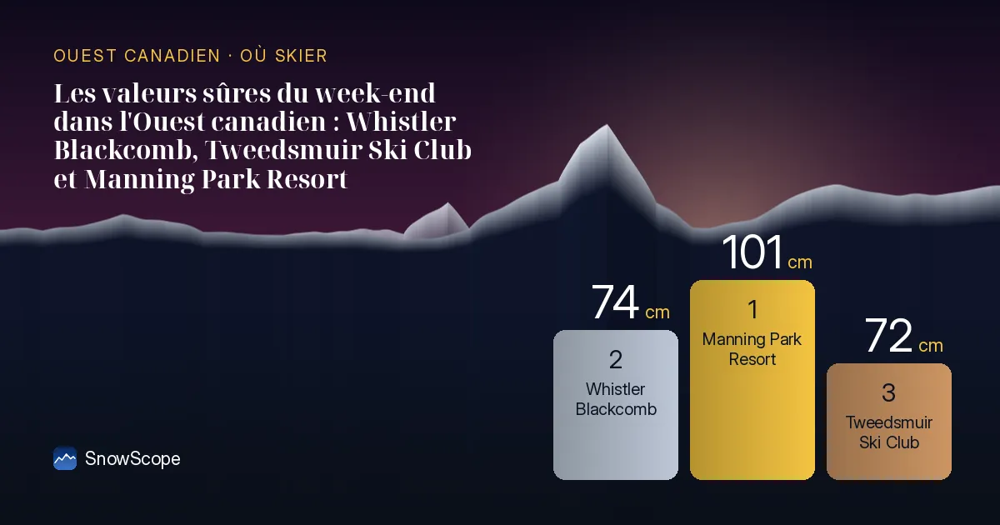

Les valeurs sûres du week-end dans l'Ouest canadien : Whistler Blackcomb, Tweedsmuir Ski Club et Manning Park Resort
Ce week-end, Manning Park Resort détient le manteau le plus épais sur ses pentes supérieures avec 101 cm, Whistler Blackcomb en affiche 74 cm et Tweedsmuir Ski Club 72 cm. Le choix entre les trois dépend de ce que vous recherchez : le plus de neige en ce moment, la neige la plus fraîche, ou ce qui arrive dans les prochains jours.
Consultez les prévisions neige en temps réel pour Whistler Blackcomb sur l'application SnowScopeHauteurs de neige, alertes poudreuse et carte 3D, gratuitement.
Ce qui est tombé ces trois derniers jours
Tweedsmuir Ski Club a enregistré les chutes les plus récentes : 38 cm en 72 heures, dont 35 cm rien que le 11 novembre. Whistler Blackcomb a reçu 29 cm sur trois jours. Manning Park Resort n'a eu que 6 cm sur la même période.
La neige fraîche compte pour la qualité du ski. À Tweedsmuir Ski Club, les chutes abondantes récentes signifient que les couches supérieures sont molles et skiables de la base au sommet. À Whistler Blackcomb, la neige fraîche repose sur un base qui s'épaissit avec l'altitude : le sommet à 2 259 m affiche 87 cm, tandis que mi-montagne à 1 456 m en a 42 cm.
| Station | Hauteur de neige | Neige fraîche, 72 h | Attendu, jours suivants | Sommet |
|---|---|---|---|---|
| Whistler Blackcomb | 74 cm | 29 cm | 34 cm | 2 259 m |
| Tweedsmuir Ski Club | 72 cm | 38 cm | 15 cm | 1 650 m |
| Manning Park Resort | 101 cm | 6 cm | 3 cm | 1 789 m |
| Mount Cain Alpine Park | 60 cm | 14 cm | 22 cm | 1 616 m |

Ce que la prévision apporte
D'ici samedi 14 novembre, Whistler Blackcomb gagnera le plus de neige : 34 cm sont prévus dans les prochains jours. Tweedsmuir Ski Club en verra 15 cm, et Manning Park Resort seulement 3 cm. Ces chiffres peuvent varier ; consultez la carte à nouveau vendredi pour confirmer.
Le timing compte aussi. À Whistler Blackcomb, l'essentiel de la neige nouvelle arrive le 12 novembre (16 cm) et le 14 novembre (17 cm). À Tweedsmuir Ski Club, 12 cm tombent le 12 novembre, puis de la neige plus légère suit.
Altitude et exposition : où skier
Whistler Blackcomb s'étend sur une montagne haute. Le sommet à 2 259 m affiche 87 cm et restera plus froid longtemps. Mi-montagne à 1 456 m en a 42 cm. La base à 653 m n'a presque pas de neige. Planifiez vos descentes pour rester en altitude.
Tweedsmuir Ski Club se situe sur un terrain plus élevé : sa base est à 1 588 m et le sommet à 1 650 m. L'épaisseur de neige est plus uniforme sur la montagne—autour de 58 à 61 cm--car l'ensemble du domaine se trouve à une altitude similaire. Manning Park Resort monte à 1 789 m ; ses pentes supérieures retiennent 101 cm mais le terrain à mi-hauteur à 1 574 m n'en a que 6 cm.
Risque de pluie et de fonte
Le 13 novembre, le niveau de congélation à Whistler Blackcomb atteint 2 140 m à 2 870 m. Puisque le sommet est à 2 259 m, de la pluie ou du verglas sont possibles à la cime ce jour-là. La neige mouillée accélère la fonte. Le lendemain, le 14 novembre, le niveau de congélation descend à 1 490 m à 2 080 m, donc la neige sera plus stable.
Tweedsmuir Ski Club se situe sur un terrain plus élevé mais face à un cycle similaire : le niveau de congélation le 13 novembre varie de 1 040 m à 1 870 m. Le 14 novembre il descend à 1 000 m à 1 340 m, ce qui signifie que la majeure partie de la montagne reste sous zéro samedi matin.
Comment cet hiver se compare
À Tweedsmuir Ski Club, l'épaisseur de neige de 65 cm à mi-hauteur (1 619 m) est plus importante que celle de la même date lors de 33 des 46 hivers précédents--bon signe pour début novembre. Whistler Blackcomb à mi-montagne (1 456 m) affiche 33 cm, ce qui est supérieur à seulement 5 hivers précédents à cette date, donc il fonctionne en dessous de la normale. La neige à mi-hauteur de Mount Cain Alpine Park, de 29 cm, est plus importante que lors de 30 des 46 hivers précédents.
La neige en début de saison est souvent mince et recouvre des rochers et de l'herbe. Même 72 ou 101 cm peuvent cacher des obstacles. Restez sur les pistes ouvertes et damées, et consultez le site du domaine pour confirmer que les remontées tournent.
Conseils aux skieurs
- Consultez le site du domaine pour confirmer quelles remontées et quels secteurs sont ouverts. La neige sur la carte ne garantit pas les opérations.
- Les pentes exposées au nord et le terrain en altitude conservent la neige plus longtemps à mesure que le soleil se renforce en novembre. Planifiez vos descentes pour éviter les versants sud en fin d'après-midi.
- La neige de début de saison repose souvent mince sur les rochers et la végétation. Skiez sur des pistes damées jusqu'à ce que le base s'épaississe.
- Les prévisions changent en quelques jours. Consultez SnowScope à nouveau vendredi avant de prendre la route.
- Avant toute sortie hors-piste ou de randonnée, lisez le bulletin officiel d'avalanche pour votre région.
À propos de ces chiffres
Les hauteurs de neige des stations sont la neige la plus épaisse sur le haut du domaine à la date indiquée ; ce sont des estimations pour une zone, pas une mesure en un point. Les prévisions peuvent changer. Consultez toujours le bulletin d'avalanche officiel avant le hors-piste.
Bulletins d'avalanche officiels: Avalanche Canada
Citer ce bulletin
Pour la recherche, l'enseignement ou la presse : chiffres et graphiques réutilisables librement sous CC BY 4.0 avec cette citation.
SnowScope (2026), Les valeurs sûres du week-end dans l'Ouest canadien : Whistler Blackcomb, Tweedsmuir Ski Club et Manning Park Resort, https://snowscope.app/blog/fr/2026/11/western-canada-where-to-ski-this-weekend-11-november-2026.html, consulté le 2026-11-11
SnowScope (Atlas Labs). (2026, November 11). Les valeurs sûres du week-end dans l'Ouest canadien : Whistler Blackcomb, Tweedsmuir Ski Club et Manning Park Resort. SnowScope snow reports. https://snowscope.app/blog/fr/2026/11/western-canada-where-to-ski-this-weekend-11-november-2026.html
BibTeX
@misc{snowscope2026westerncanadawheretoskit,
author = {{SnowScope (Atlas Labs)}},
title = {Les valeurs sûres du week-end dans l'Ouest canadien : Whistler Blackcomb, Tweedsmuir Ski Club et Manning Park Resort},
year = {2026},
month = nov,
howpublished = {\url{https://snowscope.app/blog/fr/2026/11/western-canada-where-to-ski-this-weekend-11-november-2026.html}},
note = {Published 2026-11-11 18:44 UTC; accessed 2026-11-11}
}· CC BY 4.0 · Méthodes, données et outils →
Whistler Blackcomb : neige et température selon l'altitude, cet hiver vs l'hiver dernier (outils) →
Suivre Whistler Blackcomb
Gratuit : un message quand la neige arrive, et la météo chaque matin.